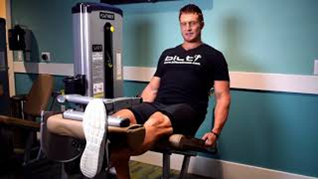

Quarta Feira - Quadríceps e Panturrilhas.
Agachamento livre.
- Comece na posição em pé, apoie o peso nas costas, na região do trapézio e segure-o firmemente e retire-o do suporte;
- Depois, com a coluna reta, estabilize o tronco, com os pés ligeiramente virados para fora e separados paralelos aos ombros. Mantenha os joelhos estendidos na mesma direção dos pés. Deixe as escápulas encaixadas para trás e o abdômen contraído;
- Em seguida, desça o tronco e flexione os joelhos e movimente o quadril para trás. Então, desça até que as coxas ficarem paralelas ao chão e, durante esse movimento, o tronco se inclina para frente e a coluna permanece reta. Os joelhos não podem ultrapassar a linha dos pés;
- Depois, eleve o tronco por meio da extensão dos joelhos, trazendo o quadril para frente. Não se esqueça de contrair os músculos da coxa durante a subida;
- Ao finalizar suas repetições, coloque a barra de volta ao seu suporte com bastante cuidado.
Clique aqui para ver a execução em vídeo.
Leg press 45°.
- Comece sentado no aparelho e com os pés no centro da plataforma e paralelos aos ombros, eles ainda devem apontar ligeiramente para fora, acompanhando o alinhamento dos joelhos;
- Em seguida, estenda os joelhos, empurrando a plataforma para frente, e destrave o peso. Segure as alças do aparelho para auxiliar a estabilização. Deixe as costas e a lombar fixadas no banco;
- Então, desça o peso cuidadosamente, flexionando os joelhos em aproximadamente 90º. Tome cuidado para não descer demais e travar os joelhos;
- Empurre a plataforma para frente com a força das coxas até estender os joelhos. Segure a contração do músculo durante um momento e repita o exercício quantas vezes for determinado;
- Ao término do exercício, trave os pesos e saia do equipamento com cuidado.
Clique aqui para ver a execução em vídeo.
Agachamento búlgaro.

- Comece o exercício em pé, com o corpo reto e os pés alinhados com os ombros;
- Segure um haltere em cada uma das mãos;
- Em seguida, coloque um pé na frente do corpo e o outro atrás, em cima de um banco. Desse modo, posicione a ponta do pé no banco com a sola apontada para cima;
- Mantenha o tronco ereto e abaixe lentamente, flexionando o joelho da perna que não está no banco até formar um ângulo de 90º e o joelho de trás ficar alguns centímetros acima do chão;
- Faça o número determinado de repetições e depois realize o movimento com a outra perna.
Clique aqui para ver a execução em vídeo.
Agachamento Hack.
- Comece se posicionando no aparelho, encoste as costas no encosto e encaixe os ombros dentro da almofada. Os pés devem ficar paralelos aos ombros e fixos na plataforma, um pouco à frente do corpo. Mantenha os joelhos e os pés alinhados e levemente direcionados para fora;
- Deixe a coluna reta, as escápulas encaixadas para trás e o abdômen contraído. Segure os pegadores do aparelho para auxiliar a estabilização. Estenda os joelhos para subir o peso e destrave o equipamento;
- Então, desça o corpo flexionando os joelhos até que as coxas fiquem paralelas em relação à base da máquina. Enquanto isso, mantenha a região lombar e os glúteos em contato com o encosto e não permita que os joelhos ultrapassem a linha dos pés (se os joelhos forem além dessa linha indica que o exercício não está sendo executado corretamente e os joelhos estarão recebendo um estresse desnecessário);
- Em seguida, suba o tronco por meio da força das coxas até que os joelhos fiquem estendidos. Deixe os músculos contraídos e faça o número de repetições determinadas. Por fim, trave os pesos e deixe o equipamento com segurança.
Clique aqui para ver a execução em vídeo.
Cadeira extensora.>

- Comece ajustando o banco e os pés na plataforma do aparelho pera sua estatura;
- Em seguida, empurrar com as pernas os pesos sobrepostos;
- Faça isso de maneira lenta levantando e voltando sempre até à posição inicial;
- Repetindo o exercício em sessões ou de acordo com o objetivo.
Clique aqui para ver a execução em vídeo.
Elevação de panturrilhas no smith.

De pé no smith, com as pontas dos pés posicionadas em cima do step, realize a flexão plantar até a contração máxima do músculo e depois desça, permitindo o alongamento máximo da panturrilha.
Clique aqui para ver a execução em vídeo.
Elevação de panturrilhas na máquina.

Comece o exercício empurrando os quadris para cima e estendendo os joelhos para subir o aparelho. Mantenha as pernas retas e evite encolher os ombros durante o movimento. Em seguida, abaixe os calcanhares fazendo uma dorsiflexão dos tornozelos. Neste momento, você deve flexionar os tornozelos em um movimento controlado e sentir as panturrilhas alongando.
Clique aqui para ver a execução em vídeo.
Elevação de panturrilha unilateral.

Levante o calcanhar pressionando a ponta do pé contra o chão e mantendo o joelho estendido. Mantenha essa posição por alguns segundos para ativar os músculos da panturrilha e só então desça lentamente até quase encostar o calcanhar no chão. Eleve o calcanhar novamente logo em seguida e repita essa sequência de movimentos até terminar sua série.
Clique aqui para ver a execução em vídeo.